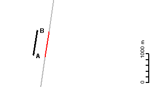

| Field: master ab west side long runs | Event: harvest | Date: 14-Sep-2004 |
AgGPS FieldManager V6.25 Application Report | ||
|---|---|---|
|  | ||
| Start Date: | 14-Sep-2004 | |
| Start Time: | 09:37:41 | |
| Field latitude: | 27° 23' 21" S | |
| Field longitude: | 151° 22' 31" E | |
| Field Area: | 0.0000 | |
| Productive Area: | 0.0000 | |
| Area Units: | ha | |
| Distance Units: | m | |
| Swath Width: | 11.0000 | |
| Application Width: | 11.0000 | |
| Total Time: | 003:40:24.23 | |
| Application Area: | 0.0000 | |